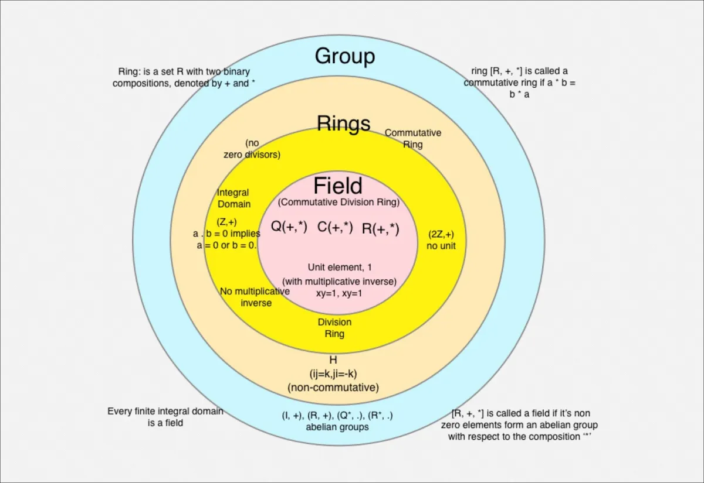

Algebraic Structures
As we enter week 11 of our exploration into Discrete Mathematical Structures in Computer Science, the terrain has notably shifted. The topics have become more intricate and challenging, requiring a higher level of understanding and analytical skills. This week, we are delving into algebraic structures, adding new layers of complexity to the subject. While the beauty of combinatorial mathematics still captivates me, the nuances and demands of algebraic structures have significantly heightened. This shift has transformed what once felt like a smooth journey into a more rigorous and demanding challenge, pushing the boundaries of my comprehension and perseverance.
We kickstarted this week with the basic concepts, starting with the properties of binary operations. Binary operations, which involve two operands, are fundamental to understanding algebraic structures. We explored properties such as closure, which ensures that the operation on any two elements of the set results in another element within the same set. Associativity was another key property, highlighting that the grouping of elements does not affect the result of the operation.
Next, we examined the identity element, a special element in the set that, when used in the operation with any other element of the set, leaves the other element unchanged. Furthermore, we delved into the concept of inverse elements, where each element in the set has a corresponding element that, when combined with the original in the operation, yields the identity element.
These foundational properties set the stage for deeper exploration into more complex algebraic structures such as groups, rings, and fields. These sets equipped with one or more operations that satisfy specific axioms. These structures form the foundation for various mathematical theories and applications.
Group: A set with a single operation that satisfies four conditions—closure, associativity, the existence of an identity element, and the existence of inverse elements.
Rings: A set equipped with two operations, addition and multiplication, that behaves similarly to the integers, where addition forms an abelian group, multiplication is associative, and multiplication distributes over addition.
Rings: A set with two operations, addition and multiplication, where both operations form abelian groups, and multiplication distributes over addition.
The Diffie-Hellman key exchange is a method of securely exchanging cryptographic keys over a public channel. Here's a simplified outline of how it uses group properties:
Setup:
Choose a large prime number p and a generator g of a cyclic group {Z}p* (the multiplicative group of integers modulo p).
Key Exchange:
Alice selects a private key a and computes A = ga mod p.
Bob selects a private key b and computes B = gb mod p.
Alice sends A to Bob, and Bob sends B to Alice.
Shared Secret:
Alice computes the shared secret as S = Ba mod p.
Bob computes the shared secret as S = Ab mod p.
Both Alice and Bob now share the same secret S, thanks to the properties of the group, specifically gab mod p.
This application showcases how the properties of groups are integral to the security and functionality of modern cryptographic protocols.